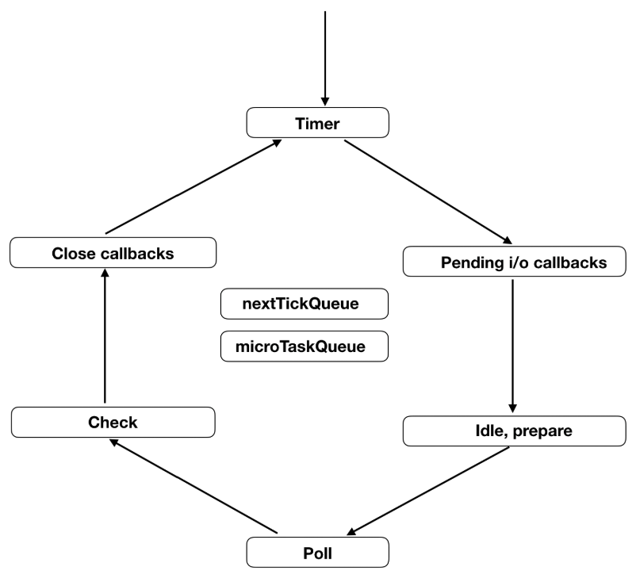

Node事件循环
在讲Node事件循环前我们先看一下时间循环的流程图

消息循环又细分为 6 个阶段(官方叫做 Phase), 每个阶段都会有一个类似于队列的结构, 存储着该阶段需要处理的回调函数. 我们来看一下这 6 个 Phase 的作用
- Timer Phase
这是消息循环的第一个阶段,处理所有 setTimeout 和 setInterval 的回调，这些回调被保存在一个最小堆(min heap) 中. 这样引擎只需要每次判断头元素, 如果符合条件就拿出来执行, 直到遇到一个不符合条件或者队列空了, 才结束 Timer Phase.Timer Phase 中判断某个回调是否符合条件的方法也很简单. 消息循环每次进入 Timer Phase 的时候都会保存一下当时的系统时间,然后只要看上述最小堆中的回调函数设置的启动时间是否超过进入 Timer Phase 时保存的时间, 如果超过就拿出来执行.此外, Nodejs 为了防止某个 Phase 任务太多, 导致后续的 Phase 发生饥饿的现象, 所以消息循环的每一个迭代(iterate) 中, 每个 Phase 执行回调都有个最大数量. 如果超过数量的话也会强行结束当前 Phase 而进入下一个 Phase. 这一条规则适用于消息循环中的每一个 Phase. - Pending I/O Callback Phase
这一阶段是执行你的 fs.read, socket 等 IO 操作的回调异常. - Idle, Prepare Phase
内部使用 - Poll Phase
这是整个消息循环中最重要的一个 Phase, 作用是等待异步请求和数据说它最重要是因为它支撑了整个消息循环机制.Poll Phase 首先会执行 watch_queue 队列中的 IO 请求, 一旦 watch_queue 队列空, 则整个消息循环就会进入 sleep , 从而等待被内核事件唤醒.当js层代码注册的事件回调都没有返回的时候，事件循环会阻塞在poll阶段。看到这里，你可能会想了，会永远阻塞在此处吗？当然 Poll Phase 不能一直等下去.
1.它首先会判断后面的 Check Phase 以及 Close Phase 是否还有等待处理的回调. 如果有, 则不等待, 直接进入下一个 Phase.
2.如果没有其他回调等待执行, 它会给 epoll 这样的方法设置一个 timeout（ 这个 timeout 设置为多少合适呢? 答案就是 Timer Phase 中最近要执行的回调启动时间到现在的差值, 假设这个差值是 detal. 因为 Poll Phase 后面没有等待执行的回调了. 所以这里最多等待 delta 时长, 如果期间有事件唤醒了消息循环, 那么就继续下一个 Phase 的工作; 如果期间什么都没发生, 那么到了 timeout 后, 消息循环依然要进入后面的 Phase, 让下一个迭代的 Timer Phase 也能够得到执行. Nodejs 就是通过 Poll Phase, 对 IO 事件的等待和内核异步事件的到达来驱动整个消息循环的.） - Check Phase
这个阶段只处理 setImmediate 的回调函数
那么为什么这里要有专门一个处理 setImmediate 的 Phase 呢? 简单来说, 是因为 Poll Phase 阶段可能设置一些回调, 希望在 Poll Phase 后运行. 所以在 Poll Phase 后面增加了这个 Check Phase. - Close Callbacks Phase
专门处理一些 close 类型的回调. 比如 socket.on(‘close’, …). 用于资源清理.
###Node.js事件循环原理 - 进入 timers 阶段
检查 timer 队列是否有到期的 timer 回调，如果有，将到期的 timer 回调按照 timerId 升序执行。 - 进入IO callbacks阶段。
执行fs.read, socket 等 IO 操作的回调异常。退出该阶段。 - 进入 idle，prepare 阶段：
这个阶段执行的都是libuv的逻辑 - 进入 poll 阶段
当event loop到poll阶段时，且不存在timer，将会发生下面的情况
如果poll queue不为空，event loop将同步的执行queue里的callback,直至queue为空，或执行的callback到达系统上限;如果poll queue为空，将会发生下面情况：如果代码已经被setImmediate()设定了callback 或者有满足close callbacks阶段的callback, event loop将结束poll阶段进入check阶段，并执行check阶段的queue (check阶段的queue是 setImmediate设定的)如果代码没有设定 setImmediate(callback)或者没有满足close callbacks阶段的callback，event loop将阻塞在该阶段等待callbacks加入poll queue;
当event loop到poll阶段时，如果存在timer并且timer未到超时时间，将会发生下面情况：
则会把最近的一个timer剩余超时时间作为参数传入io_poll()中，这样event loop 阻塞在poll阶段等待时，如果没有任何I/O事件触发， 也会由timerout触发跳出等待的操作，结束本阶段，然后在close callbacks阶段结束之后会在进行一次timer超时判断
所以实际上，timer检查会发生在两个地方：timers阶段和close callbacks阶段结束之后。 - 进入 check 阶段
执行所有immediate回调。 - 进入 closing 阶段。
处理一些 close 类型的回调
如果有，继续下一轮循环。如果没有，结束事件循环，退出程序。